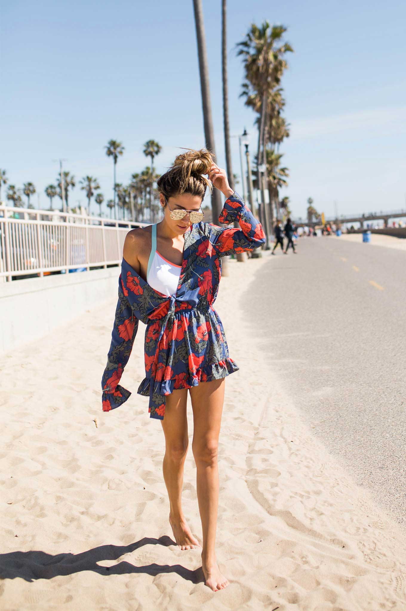

Some of My Works
Here you can find and read some of my articles.

6 WAYS TO MAKE MORE TIME IN MOTHERHOOD AND YOUR CAREER
It’s Mother’s Day week! Motherhood is one of my favorite things to write about! In
no way am I an expert, but it’s one of the things I am most passionate about.
Ever since I was a little girl, I’ve looked forward to being a mom. It wasn’t until
I became one that I realized, holy cow, it’s not as easy as it looks!

THE NEW HELLO FASHION!
Hey guys! THE NEW SITE IS LIVE!!! Can I tell you how excited I am to share this
with you guys!! I’ve been wanting to do a redesign for quite awhile. I wanted to bring you
guys a lot of new exciting features. I’m sure there will be little kinks we still work out the
next couple days (mobile version will finalize soon!) but so excited it’s live!

14 THINGS I LOVE
Happy love day! In honor of Valentine’s Day I just wanted to share 14 random things
I love. Happy Valentine’s Day!!! Whether you’re in love or enjoying being single,
take a second to let someone you care about know you love them! Whether it’s a friend,
family, kids, or your special someone. Enjoy this special day of love!

7 FUN IDEAS FOR A DATE NIGHT AT HOME
Hey guys! I’ve talked about it before but having alone time with your significant
other is so important. Make time for it! Especially once you have kids, that time
together is so important because life gets way more chaotic the older they get!